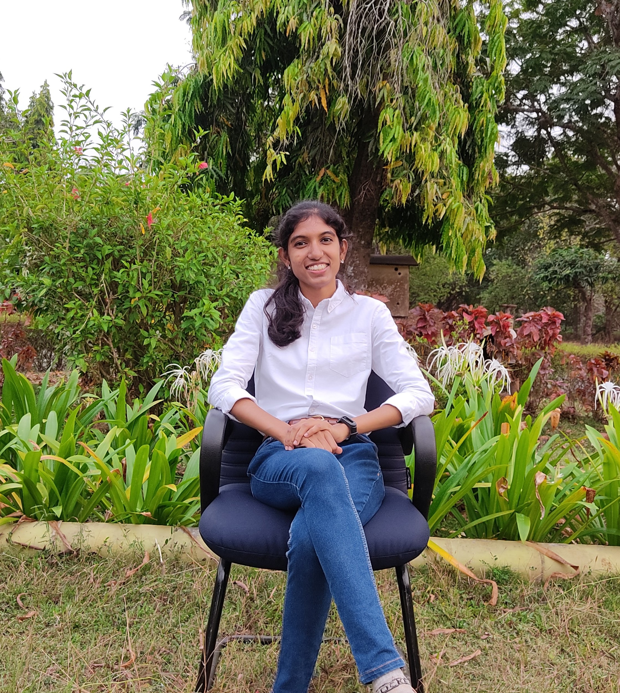

|
Aishwarya V I’m a post-grad in Remote Sensing and GIS from NIT Karnataka, Surathkal. Of late, I worked on crop rotation mapping using Sentinel-1A mission SAR data. I’ve used GIS tools for digitization, geo-referencing, Cartography, Image Classification, and DEM generation. I've applied python and JavaScript in my GIS project works. |
 |
{kind=link}
ResearchI'm interested to work with drone and satellite based spatial datasets in land monitoring, DEM generation, and water projects. The following are my academic works. |

|
Advisor: Prof. B. M. Dodamani, Thesis, 2022 The study deals with assessment of crop rotation using multi-temporal Sentinel-1A SAR data. The Sentinel-1a Ground Range Detected (GRD) data products (VH and VV polarization are acquired from 21 August 2019 to 01 January 2022 with a 12-day interval. Ginger, tobacco, paddy, cabbage, and pumpkin were the crops cultivated during the considered period. Crop classification is done on SAR images and Discrete Wavelet Transform (DWT) is applied to SAR images to study the effectiveness of wavelet transform on SAR backscattering values. Temporal analysis differentiates cropping patterns in an agricultural field and crop rotation is assessed. |

|
Advisor: Mr. J Srinivasulu, Summer Internship Project, NRSC, 2021 Water level and discharge, which are Essential Climate Variable (ECV) are identified from Godavari River using Landsat series imagery. Lond-term changes are analyzed using the Global Surface Water (GSW) dataset in Google Earth Engine. Several water indices are analysed to determine best method in water pixel extraction from a river segment. Water level and discharge model are developed with satellite-based river width and CWC's in-situ observations. |

|
Advisor: Prof. B. M. Dodamani, Under review, 2021 Dumping or landfilling in unsuitable areas becomes a biggest concern to solid waste management authorities. I determined alternative landfilling sites in Coimbatore district using GIS and Analytic Hierarchy Process (AHP) techniques. Criteria considered are population density, slope, geology, geomorphology, land use/landcover, ground water potential zones, and proximity to road, river, rail, and airport. Weighted overlay, a spatial analyst tool reclassifies raster maps and a final suitability map is generated. |

|
Mr. Jeganmurugan P, Mr. Gopalan A, Ms. Aishwarya V, Mr. Aravind S, IJITEE, 2019 Reactive Powder Concrete (RPC) is a composite material characterised with high strength and durability. It is a type of concrete made without coarse aggregate, and contains cement, river sand, micro silica, super plasticizer and composite fibres with low watre cement ratio. In this project we cast RPC specimens of suitable mix proportions by trail and error method and tested its compressive strength, tensile strength and flexural strength. The goal of this project was to acheive high compressive and flexural strength without the addition of coarse aggregates. The addition of composite fibres and superplasticizers helped in achieving high strength quicker than conventional concrete. |

|
Advisor: Mr. Jeganmurugan P, Minor project, 2018 The project plans to design an Auditorium of 1000 people capacity with fire alarm systems, parking area, canteen facilities, and rehearsal rooms as per National Building Code of India 2000 using AutoCAD 2014. It is analyzed using STAAD pro v8i software and manual calculations. |